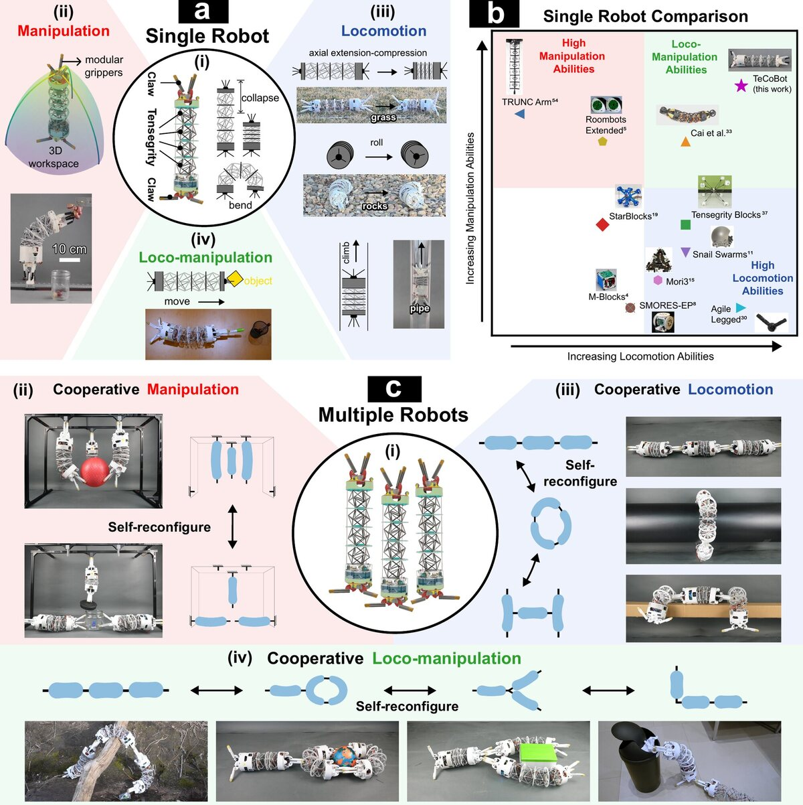
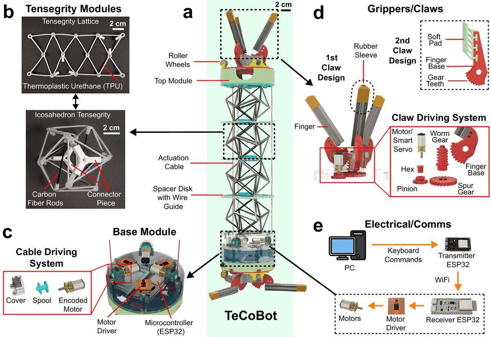
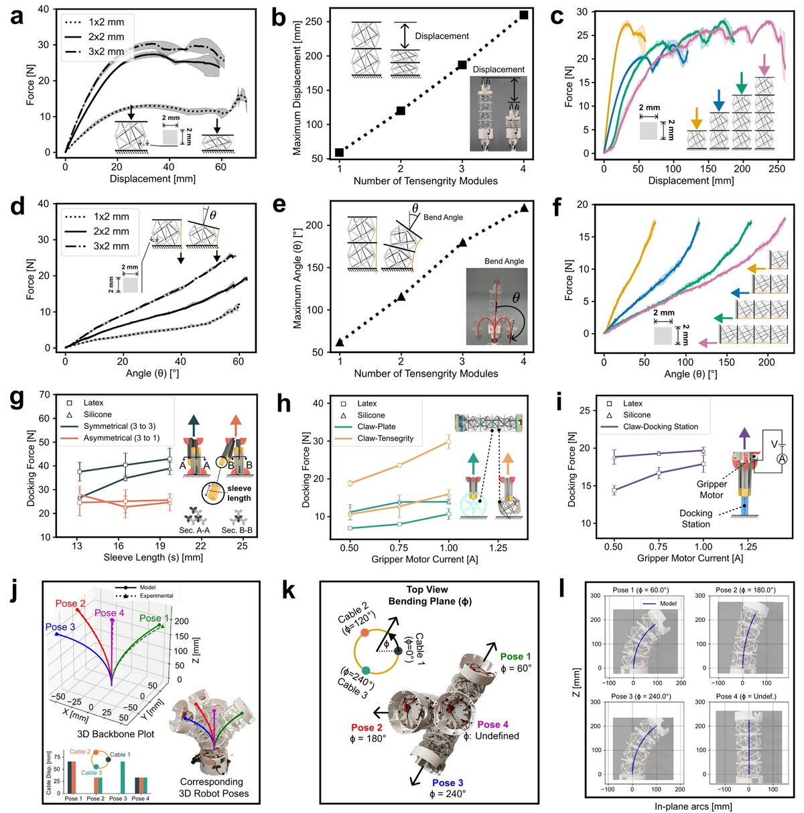
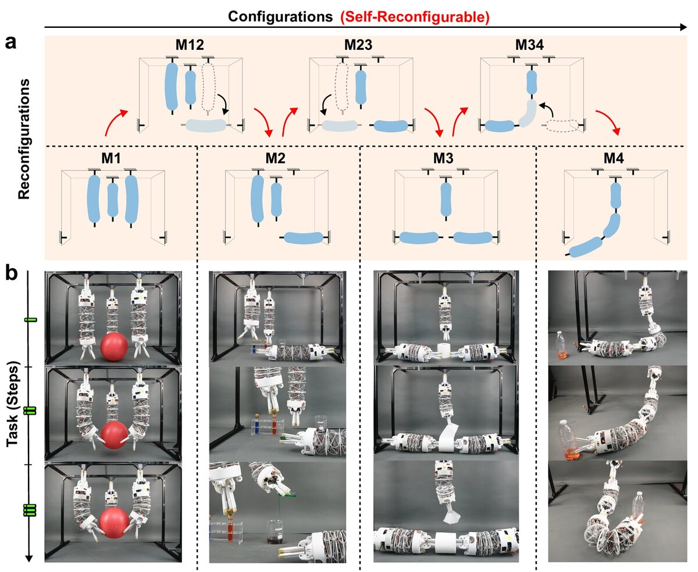
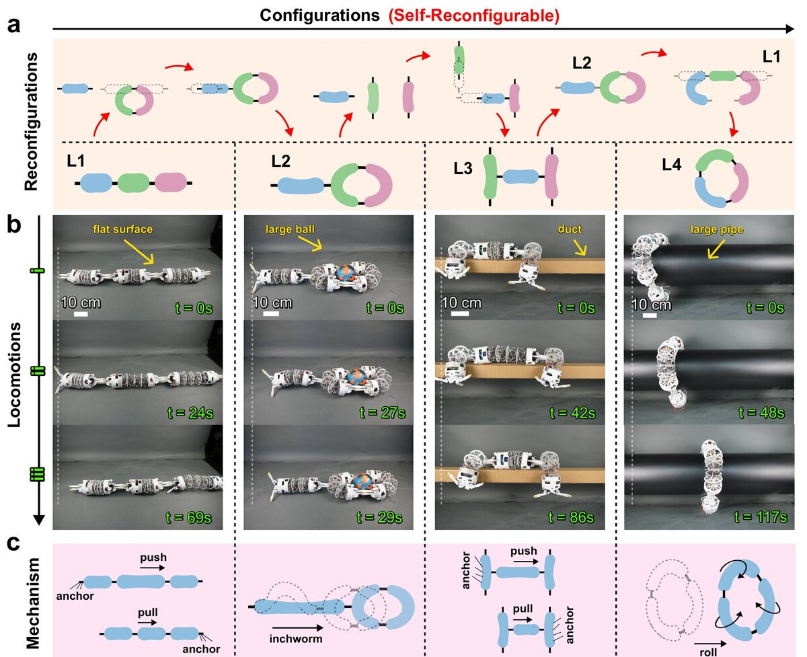
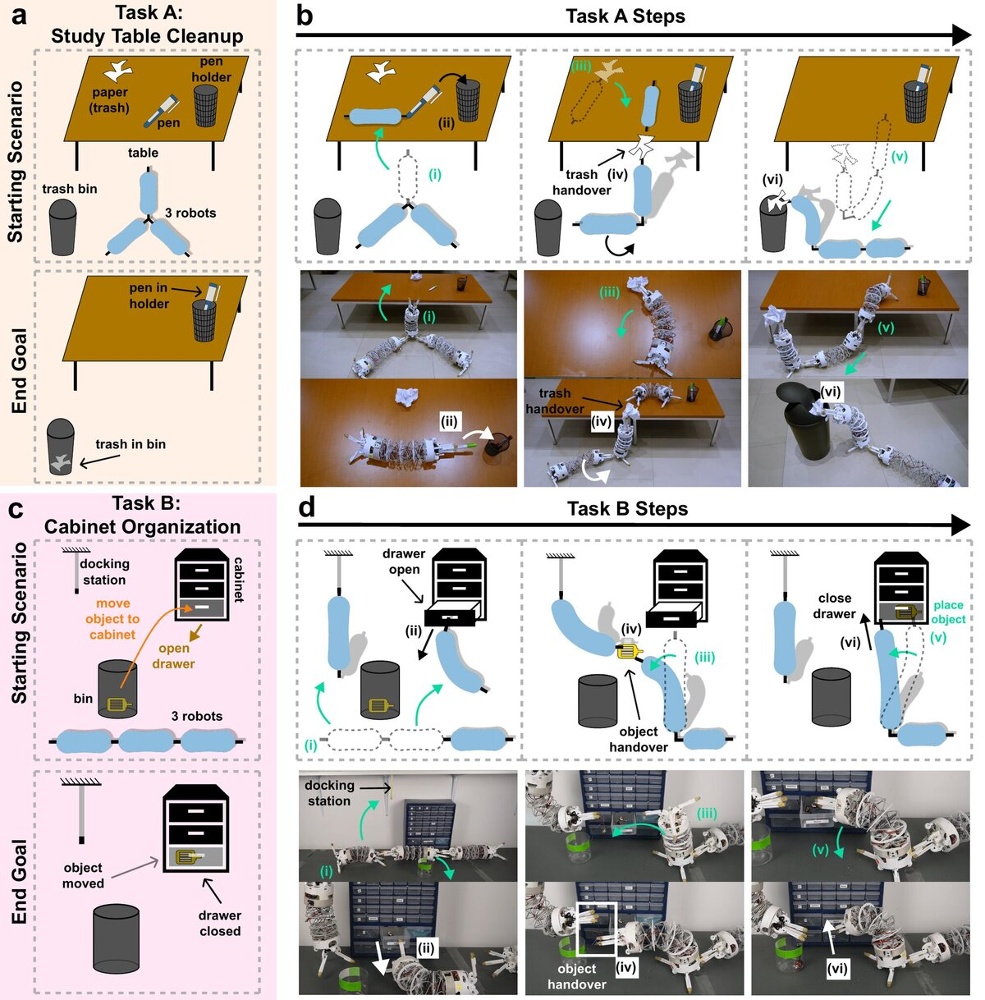

Tensegrity Continuum Robots Enable Task-Adaptive Morphologies for Cooperative Behaviors
M. H. Saikot, S. Spiegel, S. A. Kariyawasam, A. Stefka, J. Chrisler, J. Zhao
Adaptive Robotics Lab, Department of Mechanical Engineering, Colorado State University, Fort Collins, CO, USA
Nature Machine Intelligence (2026)
Figures are from the arXiv preprint (arXiv:2608.27221). Select a figure to see it full size.
Figure 1Overview

The big picture. On its own, a TeCoBot can collapse, extend and bend in any direction, grab things with the claw at either end, and get around by rolling, inching, crawling or climbing inside a pipe (a). Next to other modular robots, it is unusual in being good at both handling objects and moving (b).
Several TeCoBots can join claw to claw or claw to body and rearrange themselves into new shapes, then work as a group: handling objects together, travelling together, or both at once, such as climbing onto a table and passing an object along (c).
Figure 2How one robot is built

The body is four stacked tensegrity modules (a, b). Each module is six carbon-fibre rods held in place by one continuous, stretchy TPU tendon net. The rods take the squeeze and the tendon takes the pull, so the body can bend any way, collapse along its length and spring back.
Three cables, 120° apart, run through spacer disks from the base to the top, wound in and out by three geared motors in the base (c). Pull all three together and the body shortens; pull them unevenly and it bends toward the stronger pull.
A claw at each end is both a gripper and a connector (d). A worm gear drives its three fingers, so it keeps its grip without power. There are two versions: a rubber-sleeved claw for moving and docking, and a soft-pad claw for delicate objects. An ESP32 board in each robot takes Wi-Fi commands from a PC, so robots can be driven one at a time or in sync (e).
Figure 3Testing the body, the claws and the model

Collapsing and bending (a–f). A thicker tendon makes a module stiffer: the peak collapsing force goes from 17.5 N with a 1×2 mm tendon to 27.4 N with 2×2 mm, and only a little higher with 3×2 mm, so TeCoBot uses 2×2 mm (a, d). Stacking more modules lets the robot collapse farther, from 60 mm with one to 260 mm with four, and bend farther, from about 60° to 220°, while the force needed stays about the same: roughly 23–28 N to collapse and 16–18 N to bend (b, c, e, f).
How hard the claws hold (g–i). Two claws locked finger between finger hold up to 42.9 N with latex sleeves and 38.9 N with silicone; the sleeve length barely matters (g). A claw gripping another robot’s body holds harder as its motor current rises, reaching 29.8 N on the tendon net (h), and close to 20 N on a docking station (i). Latex was chosen because it grips the body best.
Predicting the shape (j–l). Treating the body as one smooth arc predicts where the tip ends up to within 1.9–6.4 mm, or 0.8–3.0% of its length, across four cable patterns (j). The top view shows how the three cable pulls add up to set the direction of the bend (k), and the model’s arcs line up with photos of the robot (l).
Figure 4Cooperative manipulation

Three robots work on a frame with docking stations along its edges. They switch between four layouts by letting go, moving and re-docking one claw at a time, with no one touching them (a): all three hanging (M1), two hanging and one on the ground (M2), one hanging and two on the ground (M3), and all three in a line (M4).
Each layout suits a different job (b). In M1 the three bend inward together to lift a large ball. In M2 they pick up a test tube, pull the cork and pour into a beaker. In M3 the two on the ground hold a tissue roll steady while the one above tears off a sheet. In M4 the chain reaches a bottle too far away for any one robot.
Figure 5Cooperative locomotion

On the ground, robots detach and reattach to switch between four shapes (a): a straight chain (L1), a loop with a tail (L2), an H (L3) and a closed loop (L4).
Each shape moves in its own way (b, c). The chain stretches and shortens while its ends anchor in turn. The loop wraps a large ball and the tail inches the whole group forward. The H walks along the outside of a duct by pushing and pulling between its two sides. The closed loop wraps a large pipe and rolls along it.
Figure 6Real-world tasks

Two multi-step jobs that need the robots to change shape partway through. Each reads left to right: the starting scene and the goal, then six steps (i–vi), with drawings on top and photos of the real robots below.
Task A, study table cleanup (a, b). Starting on the floor, two robots push the third up onto a 40 cm table. It returns a pen to its holder, picks up scrap paper and hands it down to a robot on the floor, and the three link into a chain that carries the paper to the bin.
Task B, cabinet organization (c, d). One robot opens a drawer, another docks to a wall station and lifts a motor out of a supply bin, and the motor is handed over, placed in the drawer and the drawer pushed shut.
Acknowledgments
This work is partially supported by the National Science Foundation (NSF) under grant CNS-2334883, and the Advanced Industries Proof of Concept Grant from the Colorado Office of Economic Development and International Trade (OEDIT).
Citation
@article{saikot2026tecobot,
title = {Tensegrity continuum robots enable task-adaptive
morphologies for cooperative behaviours},
author = {Saikot, Mahmud Hasan and Spiegel, S. and Kariyawasam, S. A.
and Stefka, A. and Chrisler, J. and Zhao, Jianguo},
journal = {Nature Machine Intelligence},
year = {2026},
doi = {10.1038/s42256-026-01335-4},
url = {https://www.nature.com/articles/s42256-026-01335-4}
}